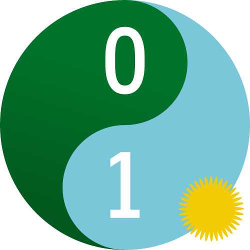
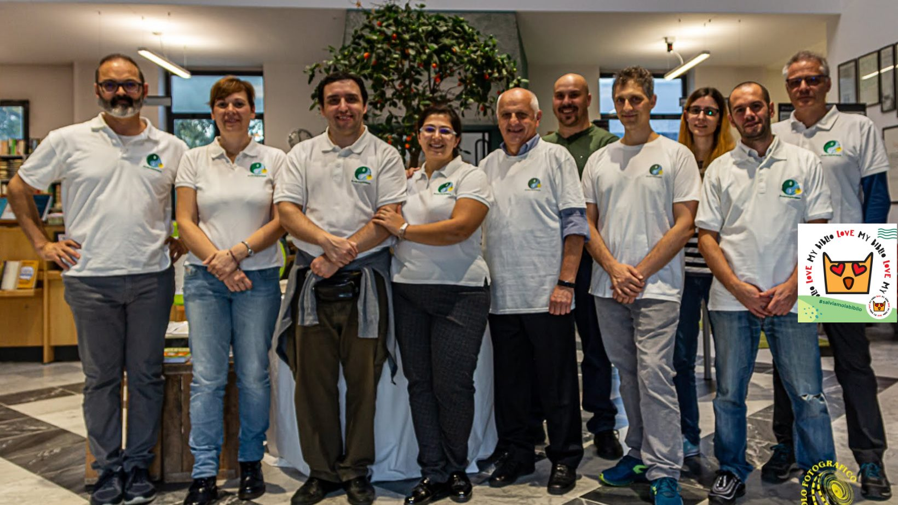

LATEST PROJECTS

Chi siamo
CoderDojo è un movimento di volontari che offre gratuitamente lezioni di programmazione ai bambini e ai ragazzi tra i 7 e i 17 anni. Il movimento promuove l'uso di software libero e open source e ogni Dojo è un club autonomo ma inserito in una rete mondiale. I ragazzi, chiamati ninja, imparano a programmare in un ambiente divertente e socializzante, grazie ai mentor disponibili a condividere le loro competenze e passioni. Come in una palestra di arti marziali, il dojo insegna non solo la tecnica, ma anche l'etica, seguendo la regola fondamentale "Above All: Be Cool!"

I bambini minori di dieci anni, nati e cresciuti a stretto contatto con la tecnologia, vengono spesso definiti nativi digitali. Non per questo è corretto pensare che sappiano utilizzare tutte le potenzialità degli strumenti che utlizzano quotidianamente. Saper tappare rapidamente da un’app all’altra è solo una piccola parte del percorso che porta a conoscere e giocare consapevolmente con i nuovi media.